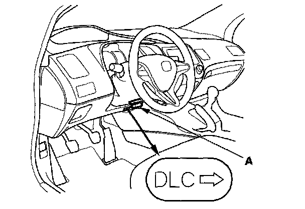

Programming and Relearning
VSA Sensor Neutral Position MemorizationNOTE: Do not press the brake pedal during this procedure.
1. Park the vehicle on a flat and level surface.
2. With the ignition switch OFF, connect the HDS to the data link connector (DLC) (A) under the driver's side of the dashboard.

3. Turn the ignition switch ON (II).
4. Make sure the HDS communicates with the vehicle and the VSA modulator-control unit. If it doesn't troubleshoot the DLC circuit.
5. Select VSA ADJUSTMENT with the HDS, and follow the screen prompts.
NOTE: See the HDS Help menu for specific instructions.
6. Turn the ignition switch OFF.